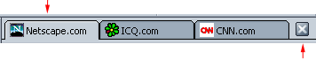

This document is provided by Mozilla for your information
only. It may help you take certain steps to protect the privacy and security
of your personal information on the Internet. This document does not, however,
address all online privacy and security issues, nor does it represent a recommendation
by Mozilla about what constitutes adequate privacy and security protection on
the Internet.
Customizing Mozilla
You can customize Mozilla to better suit your needs using features like My
Sidebar, bookmarks, and Tabbed Browsing.
This section describes the customizable aspects of Mozilla's browser component,
Navigator.
Sidebar
What is Sidebar?
Sidebar is a customizable area in your browser where you can keep items
that you need to use all the time—the latest news and weather, your address
book or Buddy List, stock quotes, a calendar—and many other available options.
Sidebar presents these items to you in tabs that are continually updated.
Mozilla comes with some Sidebar tabs already set up, but you can customize
Sidebar by adding, removing, and rearranging tabs.
[ Return to beginning of section ]
Using Sidebar
Unless you have closed Sidebar, it
is always open at the left side of your browser. To view a tab:
- Click a tab's title; for instance, click the words "Search." The Search tab
opens, which allows you to search for web pages.

|
Sidebar
Handle
|
|
If you don't see Sidebar, it may be closed. To open it:
- Move the mouse pointer up and down along the left-hand border of the Mozilla
window. The pointer changes to a hand when it touches the "handle" of Sidebar.
- Click the handle to open Sidebar.
Note: If Sidebar is not selected from the View menu in Navigator
(within the Show/Hide submenu), you will not see the frame or its handle.
|
Tip: To reload a Sidebar tab, right-click on the tab title and choose
Reload from the pop-up menu.
[ Return to beginning of section ]
Adding Sidebar Tabs
To add a new tab:
- Click "Tabs" at the top of Sidebar, and select Customize Sidebar from
the menu.
- In the Customize Sidebar dialog box, select a tab from the list on the
left. Double-click the folders to open or close folders.
- Click Add.
- Continue adding as many tabs as you want.
- Click OK to finish.
Note: If you add more than eight tabs to Sidebar, Mozilla hides
the remaining tabs to reduce clutter. To scroll through the hidden tabs, click
the down arrow button at the bottom of Sidebar until you see the desired tab.
Click the up arrow button to once again scroll up.
Tips:
- To preview a Sidebar tab before adding it, select a tab from the list
on the left side of the Customize Sidebar dialog box and click Preview. After
a few seconds, the tab displays in the Tab Preview pop-up window.
- To view an extensive and categorized list of tabs available for Sidebar,
click "Tabs" at the top of Sidebar, and select Sidebar Directory.
You can also turn Sidebar tabs on and off.
- Click "Tabs" at the top of Sidebar. Current tabs are listed in the lower
part of the menu.
- Select the tabs you want displayed in Sidebar. Remove the checkmark (deselect)
to turn a tab off (it will still be available from the menu).
Tip: To quickly turn off a Sidebar tab, right-click on its name
and choose Hide Tab.
[ Return to beginning of section ]
Customizing Individual Sidebar Tabs
Note: Not all tabs can be customized.
- Click "Tabs" at the top of Sidebar and select Customize Sidebar from
the menu.
- Select an available tab from the list on the right.
- Click Customize Tab if it is enabled. A window appears with information and
options for customizing the tab.
The instructions vary depending on the source of the tab—in addition
to Mozilla, tab providers can be any company, organization, or individual who
uses the Internet.
- After you follow the tab provider's instructions, close the customization
window (or follow the provider's instructions to close it).
- Click OK to finish.
[ Return to beginning of section ]
Reorganizing Sidebar Tabs
- Click "Tabs" at the top of Sidebar and select Customize Sidebar from
the menu.
- Select a tab from the list on the right.
- Click Up and Down to change the tab's placement.
- Repeat steps 1 and 2 to continue reorganizing as many tabs as you like.
- Click OK to finish.
[ Return to beginning of section ]
Removing Sidebar Tabs
- Click "Tabs" at the top of Sidebar and select Customize Sidebar from
the menu.
- Select a tab from the list on the right.
- Click Remove.
- Continue removing as many tabs as you like.
- Click OK to finish.
[ Return to beginning of section ]
Opening, Closing, and Resizing Sidebar
| Use Sidebar's handles to open, close, and resize Sidebar's
frame: |
|
Sidebar
Handle
|
| If Sidebar is closed, you can still see its handle. If the
handle is missing, open the View menu , choose Show/Hide, and then Sidebar.
Move the mouse pointer up and down along the left edge of the Mozilla window.
The pointer changes to a hand when it touches the "handle" for Sidebar, as
shown in the picture.
- Click the "Open Sidebar" icon
 on the left side of the Personal Toolbar.
on the left side of the Personal Toolbar.
- Click the handle to open and close Sidebar.
- Click and drag the handle to resize Sidebar.
|
To remove Sidebar, including the handle, do one of the following:
- Click the "Close Sidebar" icon
 on the left side of the Personal Toolbar.
on the left side of the Personal Toolbar.
- Click the X in the upper-right corner of Sidebar.
- Open the View menu, choose Show/Hide, and uncheck Sidebar.
- Press F9.
[ Return to beginning of section ]
Tabbed Browsing
What is Tabbed Browsing?
Tabbed Browsing lets you open more than one web page in a single window. Each
web page has its own tab across the top of a single Navigator window. Each tab
appears on the Tab Bar. For example, you can visit mozilla.org,
icq.com, and cnn.com within one window instead of three windows.
| Click this to open a new tab. |
|
|  |
|
Tab being viewed.
|
Click this to close the tab being viewed.
|
|
Tab Bar
|
You don't need to have several windows open to visit several web pages; thus,
freeing up more space on your desktop. Instead, you can open, close, and reload
web pages conveniently in one place without having to switch to another window.
[ Return to beginning of section ]
Setting up Tabbed Browsing
There are several ways to customize Tabbed Browsing. For example, you can
change your preferences to open new Navigator tabs from the Location Bar. You
can set up Tabbed Browsing in other ways too, such as loading new Navigator tabs
in the background so the first page is kept on top while the second page is loading.
To learn more about setting up Tabbed Browsing in Mozilla, see Navigator
Preferences - Tabbed Browsing.
[ Return to beginning of section ]
Opening Tabs
You can open a Navigator tab in the following ways:
Opening a New Blank Navigator Tab:
- From the File menu: Open the File menu, choose New, and then New Navigator
Tab.
- From the Tab Bar: If visible, click the "new tab" icon
 on the left side of the Tab Bar.
on the left side of the Tab Bar.
- From a pop-up menu: If the Tab Bar is visible, right-click on it,
and choose New Tab from the pop.
Opening a Web Page Link in a Navigator Tab:
- From a pop-up menu: Right-click on a web page link and choose Open
Link in New Tab. (To right-click on Mac OS, press Ctrl and click the mouse button.)
- From the Location Bar: Type a web page location in the Location Bar
and press Ctrl+Enter. (On Mac, press Cmd+Enter)
Note: You must set your Tabbed Browsing preferences to open a Navigator
tab from the Location Bar. See Navigator
Preferences - Tabbed Browsing for more information.
Tips:
- To quickly open a new blank Navigator tab, press Ctrl+T.
- To reload one or all Navigator tabs, right-click anywhere on the Tab Bar
and select Reload Tab or Reload All Tabs, respectively.
[ Return to beginning of section ]
Bookmarking Tabs
A bookmarked group of tabs is called a Groupmark. To bookmark the group of
Navigator tabs in the current window:
- Open the Bookmarks menu and choose "Bookmark This Group of Tabs".
- Type a name for the bookmark group in the Name field.
- Choose from any of these options:
- Create in: Choose a folder in which to create your Groupmark.
- New Folder: Click this button to create a new folder in which to create
your Groupmark.
- Use Default: Click this button to file the Groupmark in your designated
New Bookmark folder. For more information on designating your New Bookmark folders,
see Organizing Your Bookmarks.
- Click OK to add the Groupmark.
Tip: To learn how to use a group of tabs as your home page, see Navigator
Preferences - Navigator.
[ Return to beginning of section ]
Closing Tabs
You can close Navigator tabs in several ways:
Closing the Navigator Tab Being Viewed:
- Open the File menu and choose Close Tab.
- Click the "X" button on the right side of the Tab Bar.
| Click this to open a new tab. |
|
| |
|
Tab being viewed.
|
Click this to close the tab being viewed.
|
|
Tab Bar
|
Tips:
- To close any Navigator tab, even if hidden, right-click on the tab and choose
Close Tab from the pop-up menu.
- To keep only one Navigator tab open, while closing all other tabs, right-click
on the Navigator tab and choose Close Other Tabs.
[ Return to beginning of section ]
Changing Fonts, Colors, and Themes
Changing the Default Fonts
Normally, web pages are displayed in the default font set by your browser
or in a font chosen by the web pages' authors.
To change the default fonts:
- Open the Edit menu (Mozilla menu on Mac OS X) and choose Preferences.
- Under the Appearance category, choose Fonts. (If no options are visible in
this category, double-click Appearance to expand the list.)
- From the "Fonts for" drop-down list, choose a language group/script.
For instance,
to set default fonts for West European languages/script (Latin),
choose "Western."
- Select whether proportional text should be serif (like Times Roman) or sans-serif
(like Arial). Then specify the font size you want for proportional text.
- If an appropriate font is available for your language/script, select
fonts for Serif, Sans-Serif, Cursive, Fantasy, and Monospace. You can also specify
what font size you want for monospace text.
- Specify whether the default font should be serif or sans serif.
- Select a fixed-width font and size. Certain types of text, such as equations
and formulas, are displayed in a fixed-width font.
Many web page authors choose their own fonts and font sizes. To allow fonts
other than the ones specified in your preferences, check "Allow documents
to use other fonts."
To adjust the readability of fonts, select from the drop-down list the dots
per inch (dpi) for displaying web pages. Select "Other" to open the
Calibrate Resolution dialog box, which allows you to calibrate your resolution
by measuring how long a line appears on your screen. Increased screen resolution
may will improve text readability on some screens.
[ Return to beginning of section ]
Changing the Default Colors
Normally, the background and text colors on web pages are determined by the
default colors set by your browser or by the pages' authors.
To change the default colors:
- Open the Edit menu (Mozilla menu on Mac OS X) and choose Preferences.
- Under the Appearance category, choose Colors. (If no options are visible
in this category, click to expand the list.)
- Click the colored blocks next to Text, Background, Unvisited Links, and Visited
Links. Choose a color for each from the color chart. You can also specify that
links should be underlined.
Most web page authors choose their own colors. You can override the authors'
intentions by selecting "Use my chosen colors, ignoring the colors specified."
When viewing the source of a web page, you can see the HTML syntax of the
source of a web page highlighted in specific colors by selecting "Enable
syntax highlighting."
[ Return to beginning of section ]
Changing the Theme
You can change the look and feel of Mozilla by changing themes.
- Open the Edit menu (Mozilla menu on Mac OS X) and choose Preferences.
- Under the Appearance category, choose Themes.
- Click to select the theme you want to use.
- Click OK to confirm your choice.
Note: You need to quit and restart Mozilla after you apply a new theme
in order for the change to take effect.
Shortcut: You can also change themes by opening the View menu, choosing
Apply Theme, and then choosing the theme you want to use.
[ Return to beginning of section ]
Toolbars
Navigation Toolbar
The Navigation Toolbar, pictured here, helps you move around the Web.

|
| Back |
Forward |
Reload |
Stop |
[ Return to beginning of section ]
Personal Toolbar
The Personal Toolbar is completely customizable—you decide what you want
to keep there. The Personal Toolbar comes with some buttons already enabled,
including your My Mozilla page, your home page, search, and mail.
You can easily add, delete, and rearrange items in the Personal Toolbar.
Turning Buttons On and Off
- Open the Edit menu (Mozilla menu on Mac OS X) and choose Preferences.
- Click Navigator.
- Under "Select the buttons you want to see in the toolbars," choose
the buttons that you want on your toolbar.
- Click OK.
Adding Personal Toolbar Bookmarks
You can add buttons for your favorite bookmarks, or folders containing groups
of bookmarks. To create a new bookmark to add to the Personal Toolbar:
- Open a web page you want to bookmark.
- Drag the bookmark icon
 (located to the left of URL in the Location Bar) to a desired place
on the Personal Toolbar. You can drag the icon directly to the Personal Toolbar,
or to a folder on the Personal Toolbar. See Adding
Personal Toolbar Bookmark Folders" for more information on adding bookmark
marks folder to the Personal Toolbar.
(located to the left of URL in the Location Bar) to a desired place
on the Personal Toolbar. You can drag the icon directly to the Personal Toolbar,
or to a folder on the Personal Toolbar. See Adding
Personal Toolbar Bookmark Folders" for more information on adding bookmark
marks folder to the Personal Toolbar.
Note: The bookmark icon may appear as another page-specific icon if you have checked Show Website
Icons in preferences. See Appearance
Preferences - Appearance for more information on changing this preferences.
Each item in the Personal Toolbar folder appears as a toolbar button. You
may need to enlarge the browser window to see them all.
Adding Personal Toolbar Bookmark Folders
You can add bookmark folders to the Personal Toolbar to sort your favorite
bookmarks into categories. For example, you can have one folder on the Personal Toolbar for hobby-related bookmarks and another folder for work-related bookmarks.
To add a new bookmark to the Personal Toolbar:
- Open the Bookmarks menu and choose Manage Bookmarks.
- Select your designated "Personal Toolbar Folder."
- Click New Folder on the toolbar.
- Type a name for your new bookmark folder. By default, the name is "New
Folder."
- Click OK to confirm your new bookmark folder name.
The new bookmark folder will appear at the end of the Personal Toolbar.
Designating a Bookmark Folder as Your Personal Toolbar Folder
- Open the Bookmarks menu and choose Manage Bookmarks.
- Select the bookmark folder whose items you want to appear on the toolbar.
- From the View menu, choose Set as Personal Toolbar Folder.
The buttons in your Personal Toolbar now correspond to the bookmarks in the
folder you designated.
Removing Bookmarks from the Personal Toolbar
- Open the Bookmarks menu and choose Manage Bookmarks.
- Click the Personal Toolbar Folder.
- Select the bookmark or folder you want to delete.
- Press Delete on your keyboard.
- Close the Manage Bookmarks window.
Tip: To quickly remove a bookmark placed on the Personal Toolbar (not
in a folder), right-click on the bookmark and select Delete.
Rearranging the Personal Toolbar
- Open the Bookmarks menu and choose Manage Bookmarks.
- In your Bookmarks window, click the Personal Toolbar Folder.
- Select a bookmark or folder and drag it to a new location.
- When you are finished rearranging items, close your Bookmarks window.
Note: Standard buttons on the Personal Toolbar such as Search and Home
Page cannot be rearranged, but they can be turned off
and on.
Tip: To move a bookmark placed on the Personal Toolbar quickly, click
and drag the bookmark to another location on the Personal Toolbar or to a folder.
[ Return to beginning of section ]
Status Bar
The Status Bar is located at the bottom of any Mozilla window. It includes
the following:
- Component Bar: Allows you to switch between components. For more information,
see Component Bar.
- Status information: Displays information like the web-page URL and load status
information.
- Cookie notification icon
 :
Appears when a website has used a cookie in a way that requires you to be notified.
For more information, see Cookie
Notification.
:
Appears when a website has used a cookie in a way that requires you to be notified.
For more information, see Cookie
Notification.
- Work Offline
 or Work Online
or Work Online  icon: Click the icon to toggle working offline or online. Working offline prevents
Mozilla from attempting to connect to the Internet, for example to load images
on web pages or automatically check email.
icon: Click the icon to toggle working offline or online. Working offline prevents
Mozilla from attempting to connect to the Internet, for example to load images
on web pages or automatically check email.
- Lock icon (Example:
 ):
Indicates whether the entire contents of the page was encrypted while it was
being received by your computer. For more information, Checking
Security for a Web Page.
):
Indicates whether the entire contents of the page was encrypted while it was
being received by your computer. For more information, Checking
Security for a Web Page.
[ Return to beginning of section ]
Component Bar
Use the Component Bar at the bottom left of any Mozilla window to switch between
tasks (such as browsing or mail).
[ Return to beginning of section ]
Hiding a Toolbar
There are two ways to hide the toolbars.
To minimize a toolbar:
- Click the small triangle at the left of the toolbar. To show the toolbar,
click the triangle again. (Note: You cannot hide the Component Bar using this
method.)
To completely hide a toolbar, including its triangle:
- Open the View menu.
- Choose Show/Hide and uncheck the toolbars you want to hide.
To reverse this action, open the View menu, choose Show, and then select the
toolbars you want to show.
[ Return to beginning of section ]
Bookmarks
What Are Bookmarks?
Bookmarks are shortcuts to your favorite and most-visited web pages. Rather
than typing in long URLs (web addresses), you can create bookmarks that take
you directly to the pages you want to see.
You access your bookmarks through the Bookmarks menu, the Bookmarks tab on
Sidebar, and the Manage Bookmarks window. You can control what's listed in
the Bookmarks menu by adding bookmarks for your favorite web pages and organizing
your list of bookmarks any way you want.
Using Bookmarks
Mozilla comes with some bookmarks already available. To use a bookmark:
- Open the Bookmarks menu.
- Choose a bookmark from the list or from a folder in the list.
[ Return to beginning of section ]
Creating New Bookmarks
You can bookmark your favorite websites to make it easy to return to them.
To bookmark the current page, perform one of these steps:
- To add a bookmark to the Bookmarks menu, open the Bookmarks menu and choose
Bookmark This Page.
- To add a bookmark to a specific folder on the Bookmarks menu, or to provide
a specific name or URL for your bookmark:
- Open the Bookmarks menu and choose File Bookmark. Choose from any of these
options:
- Name: Type a name for the bookmark if you want a different name.
- Location: Type a URL for the bookmark if you want a different URL.
- Create in: Choose a folder in which to create your bookmark.
- New Folder: Click this to create a new folder in which to create your
bookmark.
- Default: Click this to file the bookmark in your designated New Bookmark
folder.
- Click OK to add the bookmark.
Tip: If you have multiple Navigator tabs open in a window, you can
select "Bookmark this groups of tabs" to add a single bookmark that
will open all of the open tabs in the current window.
- To add a bookmark to the Personal Toolbar, drag the bookmark icon next to the Location Bar to a place on the Personal Toolbar. You can drag a
bookmark to the following places:
- In the Bookmarks folder on the Personal Toolbar.
- In a bookmarks folder you've created on the Personal Toolbar.
- To the Personal Toolbar itself, on the right side of all bookmarks folders.
For more information about adding bookmarks to the Personal Toolbar, see "Adding
Personal Toolbar bookmarks".
- To add a bookmark to the Bookmarks tab in Sidebar, open Sidebar, select
the Bookmarks tab, and drag the bookmark icon next to the Location Bar to a place on the bookmark list in the Bookmarks tab.
Notes:
- The bookmark icon may appear as another page-specific icon if you have checked Show Website
Icons in preferences. See Appearance
Preferences - Appearance for more information on changing this preferences.
- After adding a bookmark using any of the methods listed above, it can be
accessed using the Sidebar Bookmarks tab, the Manage Bookmarks window, and
the Bookmarks menu.
[ Return to beginning of section ]
Organizing Your Bookmarks
To organize your bookmarks, open the Bookmarks menu and choose Manage Bookmarks.
Perform any of the following tasks in your Manage Bookmarks window.
Tip: You can open the Manage Bookmarks window from the Bookmarks tab
in Sidebar. Click on Manage at the top of the Bookmarks tab.
To view bookmarks inside of folders:
- Double-click a folder to view its contents.
To move a bookmark or a folder to another location in the list:
- Drag the bookmark or folder that you want to move to the new location. To
put a bookmark in a folder, drag it to the folder.
To create a new folder or separator:
- Click New Folder or New Separator at the top of the Bookmarks window. The
new folder or separator appears below the current selection.
To remove a bookmark or a folder from the list:
- Click to highlight the bookmark or folder that you want to remove.
- Press the Delete key on your keyboard, or click Delete in the Bookmarks window.
To sort your bookmarks in the Manage Bookmarks window:
- Open the View menu and select how you want the list sorted (such as Sort
by Name or Sort by Location).
Tip: To add more columns, open the View menu, open "Show columns,"
and select a column header in the list.
Designating a New Bookmark Folder
When you create a new bookmark, Mozilla normally adds it to the bottom of
your bookmarks list. If you prefer to file your bookmarks in a folder, you can
designate a new bookmarks folder.
- Open the Bookmarks menu and choose Manage Bookmarks.
- In your Bookmarks window, select a folder to hold new bookmarks.
- Open the View menu and choose Set as New Bookmark Folder.
[ Return to beginning of section ]
Changing Individual Bookmarks
You can change the information for any individual bookmark.
- Open the Bookmarks menu and choose Manage Bookmarks.
- In your Bookmarks window, click a bookmark.
- Click Properties.
- In the bookmark Properties dialog box window, click the Info tab.
You can rename the bookmark (the name appears in your bookmark list), add
descriptive information, or set a keyword. (You can type a bookmark's keyword
into the location field to go to the bookmarked site.)
You can also set Mozilla to check bookmarked websites for changes.
- Open the Bookmarks menu and choose Manage Bookmarks.
- In your Bookmarks window, click a bookmark.
- Click Properties.
- In the bookmark Properties dialog box, click the Schedule tab.
- Use the pull down lists to specify how frequently you want Mozilla to check
the bookmarked page for changes.
- If you want to be notified when the bookmarked page changes, click the Notify
tab and choose a notification option.
[ Return to beginning of section ]
Searching Your Bookmarks
To search the bookmarks list:
- Open the Bookmarks menu and choose Manage Bookmarks.
- In your Bookmarks window, open the Tools menu and choose Search Bookmarks.
You see the Find Bookmarks dialog box.
- In the drop-down lists, choose options to define your search, and then click
Find. Bookmarks that match your search criteria are displayed. Choose from the
following Search options:
- Choose "contains," "starts with," or "ends with" if you know only part of
the word or phrase for which you're searching.
- Choose "is" if you know exactly what you're searching for.
- Choose "is not" or "doesn't contain" to exclude pages.
- Click the fill-in field and type all or part of name or URL (web address)
for the bookmarks or history listings that you want to find or exclude.
- Select "Save query in bookmarks" to save this search for later
use.
- Double-click a bookmark in the list to go to that page.
Tip: If the list is hard to read, try expanding the search results
window.
[ Return to beginning of section ]
Exporting or Importing a Bookmark List
Your bookmarks are stored in a file named bookmarks.html. You can export a
copy of this file and save it in a folder of your choosing. You can then edit
it and treat it as you would any HTML file.
- Open the Bookmarks menu and choose Manage Bookmarks.
- In your Bookmarks window, open the Tools menu, and choose Export.
- In the "Export bookmark file" dialog box, choose a folder. Your
bookmarks.html file will be copied into the folder you designate.
- Click Save.
Your Mozilla bookmarks are not altered by this procedure.
You can also import bookmarks files from other sources. For example, you can
import bookmarks files from earlier Mozilla versions, other browsers, or from
bookmark files that your friends send you.
Before you start, make sure that the bookmark file you want to import is an
HTML file.
- Open the Bookmarks menu and choose Manage Bookmarks.
- In your Bookmarks window, open the Tools menu and choose Import.
- In the "Import bookmark file" dialog box, locate and select the
bookmark file you want to import.
- Click Open.
The imported bookmark file is treated as a group of new bookmarks and added
to the bottom of your bookmarks list. If you have designated a new bookmark folder,
the imported bookmarks are added to that folder.
Note: Importing a bookmark file imports the bookmarks and folders from
that file. It does not create two bookmark files.
[ Return to beginning of section ]
Specifying How Mozilla Starts Up
Specifying a Starting Page
You can specify the page that loads when the browser starts:
- Open the Edit menu (Mozilla menu on Mac OS X) and choose Preferences.
- Under "When Navigator, starts up display," choose whether you want a blank
page, your home page, or the last web page visited to open automatically when
you launch your browser.
Note: If you selected Home Page, type the URL in the Location field.
[ Return to beginning of section ]
Changing Your Home Page
Your home page is the page that opens when you click the Home button in the
Personal Toolbar. Depending on how your preferences are set, it may also be the
page that opens automatically when you launch Mozilla.
To specify your home page:
- Open the Edit menu (Mozilla menu on Mac OS X) and choose Preferences.
- Click the Navigator category.
- In the Home page section, perform one of the following:
- Type your home page's URL (web address) in the Location field.
- Click Use Current Page to make the page currently displayed in the browser
window your home page.
- Click Choose File to select a file from your computer's hard drive.
Tip: To specify your home page quickly, drag the bookmark icon from the Location Bar to the Home Page button on the Personal Toolbar.
[ Return to beginning of section ]
Specifying Which Components Open at Launch
You can choose components (such as Mail & Newsgroups and Composer) to
launch when you start Mozilla:
- Open the Edit menu (Mozilla menu on Mac OS X) and choose Preferences.
- Click the Appearance category.
- Select the components you want opened automatically each time you start
Mozilla.
[ Return to beginning of section ]
19 June 2002
Copyright © 1998-2003 The Mozilla Foundation.